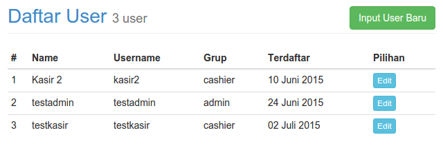
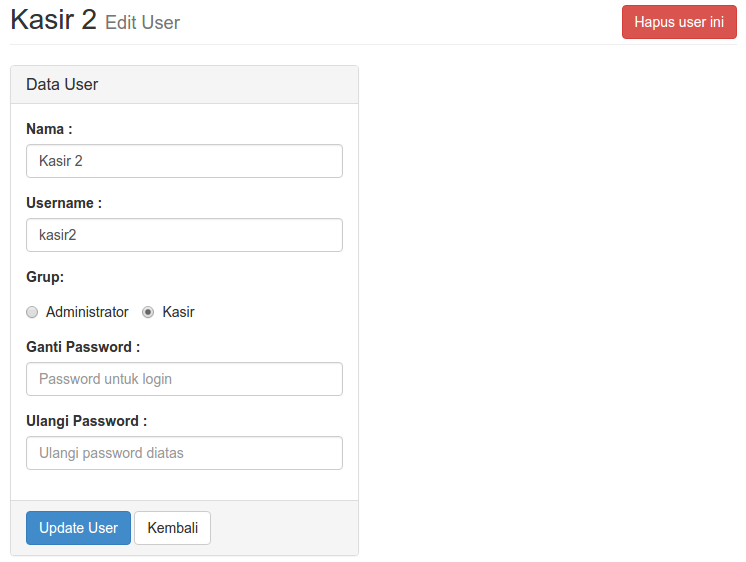
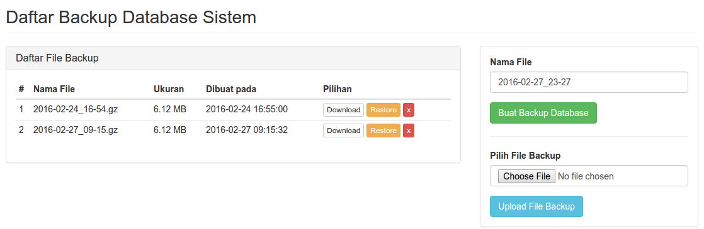
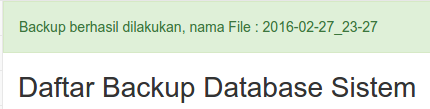
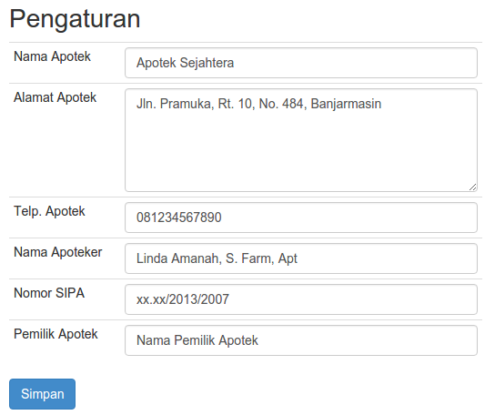

Pengaturan
Daftar User
Untuk mengatur User/Pengguna yang menggunakan aplikasi.
Buka Daftar User melalui menu Pengaturan –> Daftar User

Tipe User/Grup terbagi dua:
- Admin untuk melakukan aktifitas:
- Input Transaksi
- Mencari dan cetak Nota Transaksi
- Manajemen Data Produk, Stok Produk dan Satuan Produk
- Mutasi Stok Produk
- Cetak Daftar Harga Produk
- Melihat laporan penjualan (Modal, Omzet dan Laba)
- Mengatur User/Pengguna yang menggunakan aplikasi
- Manajemen Backup Database Sistem
- Kasir untuk melakukan aktifitas:
- Input Transaksi
- Mencari dan cetak Nota Transaksi
- Mutasi Stok Produk
Input User
- Pada halaman Daftar User, klik tombol Input User
- Isikan Nama, Username, Pilih Grup, Isikan Password dan Ulangi Password
- Klik tombol Buat User
Edit User
- Pada halaman Daftar User, pilih User yang akan diedit, klik tombol Edit
- Ubah Nama, Username, Grup, atau Password sesuai kebutuhan
- Klik tombol Update User untuk menyimpan perubahan

Hapus User
- Pada halaman Daftar User, pilih User yang akan diedit, klik tombol Edit
- Klik tombol Hapus User ini
- Klik OK untuk menghapus User
Satuan Produk
Adalah pengaturan untuk satuan-satuan produk yang digunakan dalam sistem
Daftar Satuan
Akses melalui menu Pengaturan –> Daftar Satuan

Tambah Satuan
- Akses melalui menu Pengaturan –> Daftar Satuan
- Klik tombol Input Satuan Baru
- Isi Nama Satuan
- Klik tombol Buat Satuan
Tambah Satuan
- Akses melalui menu Pengaturan –> Daftar Satuan
- Pilih satuan yang akan diedit, klik tombol Edit
- Isi/ganti Nama Satuan
- Klik tombol Update Satuan
Backup Database Sistem
Untuk mengatur Backup Database pada sistem
Daftar File Backup
Diakses dengan menu Pengaturan –> Backup Database Sistem

Membuat Backup Baru
Ini adalah fitur yang berfungsi untuk menyimpan seluruh data pada sistem menjadi sebuah File Backup ber-extensi .gz.
- Pada halaman Daftar File Backup, isikan Nama File backup yang diinginkan
- Klik tombol Buat Backup Database
- Tunggu proses backup selesai
-
File Backup yang baru akan muncul pada table Daftar File Backup
Catatan:
Sebaiknya dilakukan backup setiap hari atau minimal satu minggu sekali
Restore Backup
Ini adalah fitur yang berfungsi untuk mengembalikan seluruh data pada sistem ke data yang tersimpan pada file yang di-Restore.
PENTING:
Pastikan telah dilakukan backup dulu sebelum melakukan Restore Backup
- Pada Daftar File Backup, pilih File Backup yang akan digunakan untuk Restore Database
- Klik tombol Restore, masuk halaman konfirmasi Restore,
- Klik tombol Batal untuk kembali ke halaman Daftar File Backup
- Klik tombol Restore Database
- Tunggu proses pengembalian data, seluruh data akan dikembalikan sesuai data yang tersimpan pada file tersebut
Download File Backup
Berfungsi untuk mendownload/unduh file yang telah di backup ke dalam harddisk
- Pada Daftar File Backup, pilih File Backup yang akan di download, klik tombol Download
- Simpan File Backup ke lokasi yang diinginkan di dalam hard disk
Upload File Backup
Berfungsi untuk mengupload file yang tersimpan pada harddisk ke dalam sistem (masuk tabel Daftar File Backup)
- Pada kolom Pilih File Backup, klik Choose File
- Cari dan pilih File Backup yang akan di-upload
- Klik tombol Upload File Backup
- Tunggu proses selesai
- File yang di-upload akan masuk Daftar File Backup
Hapus File Backup
Berfungsi untuk menghapus File Backup yang tersimpan di dalam sistem
- Pada Daftar File Backup, pilih File Backup yang akan di download, klik tombol x
Pengaturan Aplikasi
Adalah pengaturan sistem untuk: Nama Apotek, Alamat, Telp. Apotek yang akan tampil pada Nota/Faktur yang dicetak.
